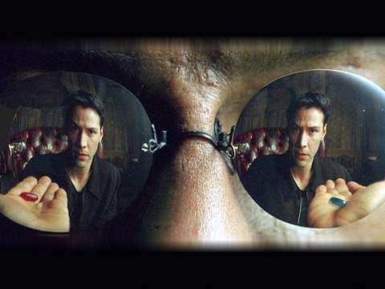

DMT/瞑想/NDE/チャネリングで究極の真実を得たのに全てを忘れる理由

(image surce : "The Matrix", movie film)
履歴
(2021-07-06) 追加 (2021-07-04) 作成前置き
・このネット会議の主要なテーマは ・DMT 摂取、瞑想、NDE、チャネリングで究極の答えを得たり、宇宙の真理を理解した…という報告が無数にある。 ・私（複数の参加者）もそれを体験した。具体的には…（略） ・なのに日常意識を取り戻したら、その全てを忘れていた。 ・なぜそれほど貴重な情報を忘れるのだろうか？ というもの。参加者は全員 DMT などの摂取経験があり、中にはかなり高い頻度で摂取した人間（Desta Barnabe など）も含まれる。 ・音声書写（自動生成）が付与されていないが、付与されたら追加するかも。見どころ
・33:10 あたりがこの動画の最大の見どころ。（他はどれもヨタ話） ・Chase Williamson の絶妙な受け答えで、全員が苦笑いしている。(2021-07-06 begin)
音声書写（自動生成）
(2021-07-06 end)▼展開
and if that's 32:57 the case why 32:59 why doesn't it happen when i like like 33:01 if i'm about to be in a car wreck or 33:02 something or if i'm 33:03 you know lightning is going to strike me ---- 33:05 you know what the answer would be 33:06 if you were on a dmc dmt trip right now 33:10 yes that would be the answer 33:13 and then you'd see the universe and you 33:15 come back and you go... shit!手抜き
・8:40 Chase Williamson（ヒゲ男、右下)：DMT 摂取でで究極の回答を得た。が DMT あから覚めたら全て忘れていた。 ・12:50-- Desta Barnabe : ひと晩中、全ての謎の回答、全ての真理を得たが朝になったら忘れていた。 ・13:40 テープに語って録音とする方法。 覚えていなくとも答えは無意識かどこかに残っている。 ・トリガーとなる幾つかの記憶があるから、どこかに全体の記憶が残っている筈。 ・7:00 Chase Williamson：もし、得た全ての情報を忘れなかったら、もう人間ではなくなる？ ・34:00 Desta : Michael Talbot の本、"The Holographic Universe" が私の世界観をひっくり返した。動画（1:15:43）
GRANT CAMERON Psychedelics, the Mind and the Nature of our Reality with Strange Recon PART 1コメント1
・参加者（Desta Barnabe, Grant Cameron, Chase Williamson, Jeff Kingsbury）はみな、次のように思い込んでいる。 ・(a) 真理なるものが、人間とは無関係に、自立・独立して存在している。 ・(b) さらに、真理群の中には「究極の」真理なるものが存在している。 ・(c) おまけに、その「究極の真理」を人間は獲得できる。 ・だが、すでに (a) が間違っている。 ・真理は（宗教における神と同じく）、人間が作り上げた観念（＝幻想）なので、真理の追求は哲学のそれだろうが精神世界のそれだろうが、どれも無駄にカラカラと空回りするだけで、どこにもたどり着かない。 ・真理が実在しないゆえに、当然ながら (b) や (c) も間違っている。DMT の摂取や、瞑想で得られるのは「究極の真理」というラベルを貼った「中身が空っぽの観念」でしかない。中身が空っぽだから後で思い出そうとしても何も出てこない。当然の話。 ・空っぽの観念だから、後からそこに有り難そうなタワゴトを何でもブチ込むことができるし、帽子から兎を取り出す手品のように何でも際限なく（観念のタワゴトを）引っ張り出すことができる。 ・仮にだが、DMT なり瞑想なり、禅の悟りなりで得られた「究極の真理」の中身が空っぽでなく、何かが有ったとする。その何かを A としよう。A が空でない場合は、次のような 致命的な矛盾を生じる。それゆえ、空っぽでなければならない。 …コメント2
・DMT 摂取、瞑想、NDE、チャネリングで究極の答えを得た（が、日常意識からはその答えにアクセスできない）…という主張は、いわば精神世界のドグマになっている。 ・この「究極の真理を得たが、アクセスできない」という精神世界のドグマは「禅のドグマ」（＝誰もが既に悟っているのだが、それに気づいていないだけだ）と共通した構造になっている。そしてこの共通した構造は単純な錯誤に基づいている。 ・このような「観念が逆立ちした構造」は宗教的な救済観念にも組み込まれている。神を信ずるものは、救われることが決まっているから、信じることができるのだ…とか、念仏を本心で唱えた時には成仏は决定しているのだ…とか、菩薩の誓願の時点で…とか。 … (2021-07-04) (2021-07-06)
初出
DMT 摂取、瞑想、NDE、チャネリングで究極の答えを得たのに、気づいたら全てを忘れているのはなぜか。 （途中2） (2021-07-06)
この記事の完了度: